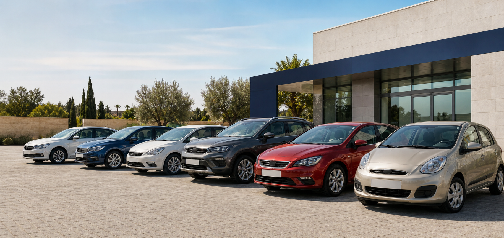

Compraventa de vehículos de ocasión
Tu próximo coche.
El mejor destino para el tuyo.
Una forma más sencilla de comprar o vender: coches revisados, información clara y una persona acompañándote en cada paso.
12 mesesde garantía mínima100 puntosde revisión
Empieza por aquí
Dos caminos.
La misma tranquilidad.

Selección de la semana
SEAT Ibiza 1.0 TSI FR
2022 · 39.800 km · Gasolina · Cambio manual
17.490 €Ver vehículos disponibles →También compramos
Tu coche puede ser el próximo coche de alguien.
Lo valoramos, lo revisamos y nos ocupamos de la documentación. Tú decides si nuestra oferta te encaja.
Solicitar tasación¿Hablamos?